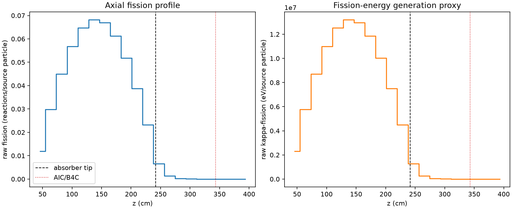
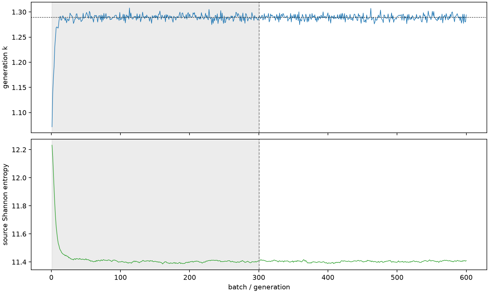

| field | value |
|---|---|
| experiment | V2-STAGE_128_OGRENCI_03-0005 |
| k | 1.2892394270318637 |
| MC standard error | 0.00018441280643805529 |
| seconds | 977.4525334980062 |
| acceptance | not_assessed |
| convergence | review_required |
Completed is output integrity only; physical and statistical review required. Zero tallies do not prove zero production or zero uncertainty.
| diagnostic | value |
|---|---|
| geometric fuel voxels | 5280 |
| zero fission tally voxels | 430 |
| low signal fuel voxels | 1433 |
| low signal fission share | 8.769124577656811e-05 |
| low signal kappa share | 8.772734399657059e-05 |
| important fission share | 0.9500360227028524 |
| previous filter included | 3847 |
| duration estimate s | 1562.5173488400023 |
| actual minus estimate s | -585.0648153419961 |
| fission relative MC error | statistics |
|---|---|
| all_geometric_fuel | {"voxels": 5280, "positive_mean_voxels": 4850, "zero_mean_voxels": 430, "undefined_relative_error_voxels": 430, "median": 0.010845118890287234, "p95": 0.8621022121250642, "maximum": 1.0000000000000002} |
| low_signal | {"voxels": 1433, "positive_mean_voxels": 1003, "zero_mean_voxels": 430, "undefined_relative_error_voxels": 430, "median": 0.5883211517885466, "p95": 1.0, "maximum": 1.0000000000000002} |
| important_95pct | {"voxels": 2567, "positive_mean_voxels": 2567, "zero_mean_voxels": 0, "undefined_relative_error_voxels": 0, "median": 0.0074102256088628615, "p95": 0.01091858476316757, "maximum": 0.012861690682781578} |
| outside_previous_filter | {"voxels": 1433, "positive_mean_voxels": 1003, "zero_mean_voxels": 430, "undefined_relative_error_voxels": 430, "median": 0.5883211517885466, "p95": 1.0, "maximum": 1.0000000000000002} |
| kappa_fission relative MC error | statistics |
|---|---|
| all_geometric_fuel | {"voxels": 5280, "positive_mean_voxels": 4850, "zero_mean_voxels": 430, "undefined_relative_error_voxels": 430, "median": 0.010835190194641051, "p95": 0.8611938915781415, "maximum": 1.0000000000000002} |
| low_signal | {"voxels": 1433, "positive_mean_voxels": 1003, "zero_mean_voxels": 430, "undefined_relative_error_voxels": 430, "median": 0.5877088742467232, "p95": 1.0, "maximum": 1.0000000000000002} |
| important_95pct | {"voxels": 2567, "positive_mean_voxels": 2567, "zero_mean_voxels": 0, "undefined_relative_error_voxels": 0, "median": 0.007403063306825254, "p95": 0.010907885209393125, "maximum": 0.012847654674715612} |
| outside_previous_filter | {"voxels": 1433, "positive_mean_voxels": 1003, "zero_mean_voxels": 430, "undefined_relative_error_voxels": 430, "median": 0.5877088742467232, "p95": 1.0, "maximum": 1.0000000000000002} |
| axial bin | fission share | kappa-fission share |
|---|---|---|
| 1 | 0.022662465701897866 | 0.022663397259274392 |
| 2 | 0.05650780415269473 | 0.05650755615963187 |
| 3 | 0.08532382215395787 | 0.08532335364602696 |
| 4 | 0.1078862279792748 | 0.10788602582297524 |
| 5 | 0.12301580267454934 | 0.12301513666756224 |
| 6 | 0.1294136359312454 | 0.1294130856431231 |
| 7 | 0.1271973891671003 | 0.12719651999990664 |
| 8 | 0.11640175486261854 | 0.11640102369970946 |
| 9 | 0.09829425324548158 | 0.09829373195171333 |
| 10 | 0.07357994816363501 | 0.07357964174026956 |
| 11 | 0.04408243747049757 | 0.04408239970765113 |
| 12 | 0.012427059866781838 | 0.012429561735089299 |
| 13 | 0.0024875655488116825 | 0.0024884520855350772 |
| 14 | 0.0005585706708624514 | 0.0005587889143728367 |
| 15 | 0.00012609399811888388 | 0.00012613823986405484 |
| 16 | 2.663754746067374e-05 | 2.6651643367773573e-05 |
| 17 | 6.755177048528307e-06 | 6.757898627899203e-06 |
| 18 | 1.470796204175472e-06 | 1.471918115475703e-06 |
| 19 | 2.949053382052115e-07 | 2.952737669435025e-07 |
| 20 | 9.986420472819116e-09 | 9.993416727066325e-09 |
Histories include the inactive-to-active transition at batch 300. kappa-fission approximates fission energy production, not total heat deposition.

